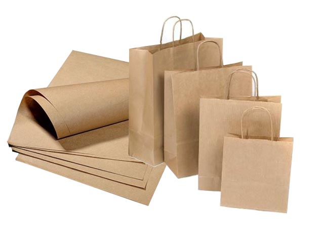

Giấy kraft là loại giấy dùng để đóng gói, làm bao bì được sản xuất từ bột gỗ của thân cây gỗ mềm,
tạo nên bởi quy trình nghiền bột. Quy trình nghiền bột giấy kraft được tiên phong bởi Carl F. Dahl của Đức
vào những năm 1880. Trong các quá trình sản xuất giấy thông thường, gỗ sẽ được ép và nghiền thành bột giấy trước.
Tuy nhiên, Carl F. Dahl đã nhận thấy rằng, việc xử lý bột giấy cellulose bằng một số hóa chất (sunfat)
nhầm làm tăng độ bền chắc của giấy. Đó là lý do giấy kraft ra đời và được sử dụng làm vật liệu đóng gói do tính chất bền,
dẻo dai và hữu ích của nó. Dahl đã gọi giấy của mình là giấy kraft – vì kraft theo tiếng Đức có nghĩa là ‘sức mạnh’.
Giấy kraft xưa thường chỉ được dùng làm bao bì trong lĩnh vực công nghiệp (thường được biết đến với tên gọi là giấy xi măng).
Nhưng ngày nay, chúng có mặt ở khắp mọi nơi với nhiều mục đích khác nhau như Danh Thiếp, bao thư, Túi Giấy mua sắm, giấy gói thực phẩm,
bao lì xì, thẻ treo quần áo,…
và rất nhiều những vật dụng khác mà chúng ta sử dụng hàng ngày, vì vật liệu giấy ngày nay thân thiện với môi trường.

Giấy kraft có hai màu là nâu vàng và trắng. Màu nâu vàng nhạt được làm từ sợi Xenlulozo được xử lí với muối Natri sunphat, không cần qua bước tẩy trắng bằng phương pháp sun-phit. Loại giấy tự nhiên thường là màu nâu vàng nhưng thường được tẩy trắng để sản xuất giấy trắng. Vì vậy màu sắc tự nhiên đặc trưng giống màu gỗ nên mang lại cảm giác sang trọng cổ điển.
Đặc tính của nó là bền, dẻo dai, tương đối thô, bắt mực tốt và chống thấm tốt Khả năng thấm hút ẩm
Thấm dầu tốt nên thường dùng làm bao bì thực phẩm.
- Định lượng từ : 80 - 400gsm/m2.
- Dễ phân hủy trong môi trường tự nhiên, có thể dễ dàng tẩy trắng để tái chế sản xuất giấy trắng thường dùng,
- Khả năng tái chế là 100% nên cực kì an toàn với môi trường. Không phản ứng sinh ra chất độc hại khi chịu nhiệt độ cao nên rất an toàn.
- Không cầu kì về hình thức hay kỹ thuật sản xuất nên giá thành rẻ do đó giấy kraft đang ngày càng thông dụng trên thị trường.
- Giá thành rẻ, giúp các doanh nghiệp tiết kiệm chi phí đầu tư cho việc in ấn bao bì.
+ Có thể Ép Kim, Dập Nổi lên bề mặt nên việc in ấn các họa tiết lên giấy rất dễ dàng.
+ Đặc tính dẻo dai chịu lực giúp cho việc chứa đựng và bảo quản hàng hóa luôn được đảm bảo.
+ Màu tự nhiên đã đẹp sẵn nên không cần tẩy trắng hay phun thêm màu nên an toàn cho sức khỏe con người.
+ Giấy kraft Thông dụng nên thường được ứng dụng trong mọi lĩnh vực.
+ Hầu hết là những nhà hàng, khách sạn, quán cafe hoặc những người thích trường phái thiết kế cổ điển
+ Giấy kraft được xem là sự lựa chọn hàng đầu trong việc trang trí cũng như thiết kế.
Hãy liên hệ với chúng tôi, Nếu có nhu cầu in ấn giấy Kraft :
Công ty TNHH Thiết Kế & Quảng Cáo Song Việt
Địa chỉ: 30 đường số 6, phường Bình Hưng Hòa B, Bình Tân, TP.HCM
Điện thoại: 0908 77 65 69
Email: inansongviet@gmail.com
Tư vấn miễn phí:
m.me/inansongviet